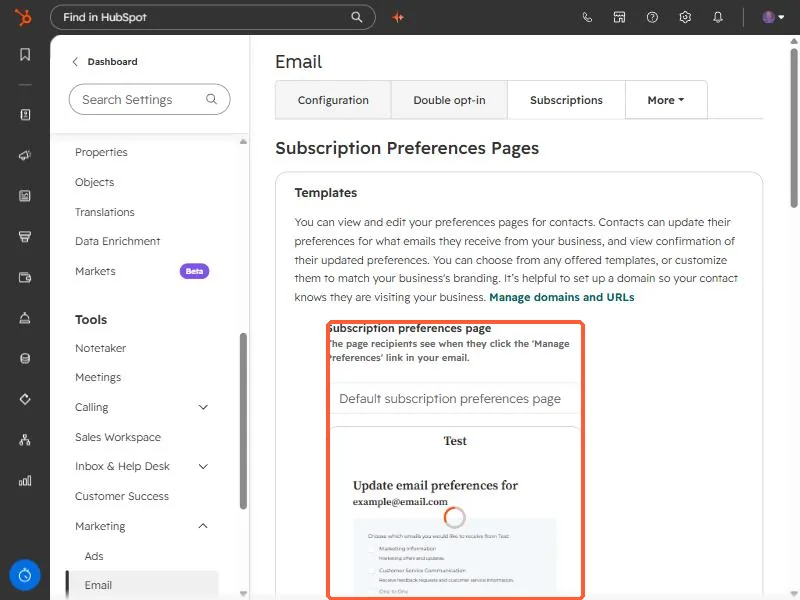

Short answer
Every marketing email is sent under a subscription type, and contacts choose which types they want on the subscription preferences page. HubSpot's defaults include Marketing Information, Customer Service Communication, and One to One. You can create up to 1,000 types. Reorder them by dragging, edit one from its Actions menu, or archive one you no longer use. If you archive One to One and later send a one-to-one email, HubSpot brings it back.
1. The preferences page contacts see
Open email settings and click Subscriptions. The top of the page is Subscription Preferences Pages, with a template for the page recipients see when they click Manage Preferences in your email. The preview lists the subscription types a contact can tick: Marketing Information, Customer Service Communication, and One to One.


HubSpot suggests setting up a domain so contacts know they are visiting your business. See connect your own domain.
2. Create, edit, and reorder
- You can have up to 1,000 subscription types.
- To change the order on the preferences page, click a type and drag it.
- To edit one, hover it and open the Actions menu, then choose Edit.
- Archive types you no longer use. HubSpot has a page for reviewing which are actively used.
3. Two special types
- One-to-one and customer service communication are defaults that cannot be associated with brands.
- If you archive One to One and later send a one-to-one email, it is unarchived and appears again.
4. Why this matters for opt-outs
A contact who unsubscribes from one type stays subscribed to the others. Opting a contact out of all email is a separate action on the record. See how to opt a contact out of all email.